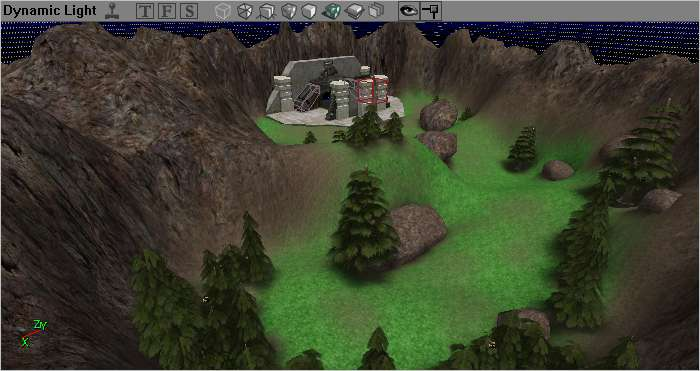

Assault Mapping Tutorial/Getting Started
This page is a section of the Assault Mapping Tutorial. If you have arrived here from some other place, this page will likely make more sense if you start at the above link and read the tutorial through from beginning to end.
Previous Section: Assault Mapping Tutorial
Next Section: /Creating a Destroyable Objective
Getting Started
Assault mapping is easily the most complex and demanding of any of the game types to map for. This is because it requires not only most of the skills needed to make all of the other map types combined, but also throws in quite a few quirks of its own. Tempting though it may be, do not try to make an assault map for your first ever mapping experience. Instead, it is strongly recommended that you have some experience mapping several other game types and have all the basics down before you start considering an assault map.
That having been said, while assault mapping is one of the most challenging forms of mapping for UT2004, it can also be very rewarding. There are a few things to keep in mind when starting out, however:
Planning the Map
Ok, so you're starting a new map. The first thing to do is fire up UnrealEd, right? Wrong. You're not just making another Capture the Flag, or even Onslaught, map here. This is Assault, and Assault takes planning. If you want your map to be any good at all you'll need to start thinking about a lot of details before you sit down to start building.
Get out a pencil and pad of paper (or a text editor and a drawing program if you prefer). You're going to need it.
Backstory
For a lot of folks, this seems like something that should be an afterthought at most. This is Unreal Tournament. You go around and shoot people. Who cares about a story? And this is pretty much true for most of the other game types out there, but for assault, having an idea for a bit of backstory and premise for your map before you begin is really one of the first things you should do, and can be surprisingly important.
A backstory can provide several key factors for your map creation:
- It can give you a good key as to what the world should look and feel like, and more importantly what the obstacles are and where you should be placing them. What would attackers realistically need to do in this scenario? How would the defenders try to stop them? Consistent goals that fit with a premise can not only improve the believability for the players, but often help with balance and timing issues later on.
- As a corrolary to the previous point, a backstory can give players a better intuitive feel for how the level works and what they'll need to accomplish. An assault level where the goals seem to be completely arbitrary and confusingly placed can be very frustrating to play. On the other hand, if the player starts out with an idea of what the map is all about, and where they need to go and what they need to do at each stage flow naturally from that foundation, it can make playing less confusing and more enjoyable for everyone involved.
- A backstory that the player can really get into can give a map a lot more depth and make it much more compelling to play. This is actually one of the big advantages to the Assault gametype. The degree to which the gameplay is customized to each map can make each one a lot more interesting than the "same game with new scenery" effect one typically gets with new maps for most other gametypes. Exploit this fact and build from it to create a compelling world for your participants to be part of and it will only enhance the game that much more.
So, that having been said, here's a few questions you'll want to answer before you start:
- Who are these people? Are the teams military troops on a campaign? Bands of citizens in a lawless world trying to survive? Eco-terrorists fighting to save a cute fuzzy animal? There are more possibilities than you might think at first glance.
- How did they get here? Is this the culmination to a great crusade across half a planet? Did the attackers just parachute in from orbital drop-ships? Did a covert op go bad and now one team is stuck deep inside enemy territory?
- Why is the other team trying to stop them? Defenders are people too, and they have their own stories.
- What happens when the attackers succeed with their mission? What does this mean for the larger universe?
- What happens when the defenders succeed in stopping them?
Think about details. Write it all down in a few paragraphs. You'll be glad you did later. (Note that this shouldn't be set in stone, though. You may well need to go back and revisit this premise and tweak some things here and there as you're building the map. That's a natural part of the building process too.)
Objectives
Now that you've got a good idea of what the story behind your scenario is, it's time to start thinking in mapper terms. Your story should already have given you a few ideas about what obstacles and objectives are going to be involved in the assault. Now you need to think about how you're going to implement them.
Take a good read through the rest of this tutorial with an eye to the types of objectives you have to work with. For your map you'll likely want somewhere between five and ten objectives from beginning to end. How many depends a lot on how the gameplay works out and how long it takes people to get through them, so you may need to adjust things as you go. Pick four or five really important objectives that exemplify what the story is all about, and then think about places you might add more or ways you might substitute alternates if it looks like the gameplay needs it. You want to get a starting plan, but don't get too tied down to anything at this stage, because you never know what you might have to change later.
It's very important here to think about the timing of your objectives. To maintain a consistent feel of progress and keep the game fun, you want the objectives to be well spread out over the progress of the level, so there aren't any places where people feel like they're whizzing through things or bogged down in one place forever. Also keep an eye on the total game time. The default time in the game for one round of an Assault map is ten minutes, and this is a good ballpark to shoot for. Too much shorter than this and people won't feel they've really accomplished anything. Too much longer than this, and people will start wondering if they'll ever see the end of things. Got too many ideas for a ten-minute map? That's ok, that just gives you more to start with when you get to making your next map! There's always a next map, so don't blow all your good ideas at once.
Ok, got your basic objectives? Take a minute to think about the requirements that your objectives will have in order to be challenging, but not impossible. If you've got a destroyable objective, for example, you don't want it in plain sight where the attackers can just shoot it from their spawn points. You need something in the way that they'll have to navigate past to get to where they can attack the target. Have a HoldObjective? You need to put it somewhere where the defenders can try to blow away the person who's getting too close to it, but at the same time you don't want it so defensible that the attackers never get near it. Take some ideas from other maps that work well, too. Once you've got some basic ideas for how you'll do all this, this should lead you right into the next step...
Layout
Now it's time to start putting everything together into an actual map. From your backstory you've probably already got an idea of what the scenery should look like. From your objectives, you have some idea of how the gameplay will need to progress, and what sort of obstacles you'll want to have in the way. Next you'll want to think about travel.
One of the challenging aspects of Assault is that the attackers need to manage to push their way through the defense to get at the objective, and this usually means a lot of running, dodging, shooting, and so on (you know, the fun stuff). To do that we're going to need some distance between the attackers' spawn point and the objective under attack. For each stage, you'll want some room to maneuver, and you might have a good number of people on each team, so think fairly open spaces. On the other hand, you'll want to include some objects to duck behind, navigate around, jump from, and otherwise make things interesting. For at least some of your objectives, try to come up with a couple of different routes to get to them. This adds uncertainty for both the attackers and defenders and can make the game more interesting. Be careful with more than two routes, however, since if you're not careful this can make things very frustrating for the defenders and very easy for the attackers. Also be really careful of "sneaky" routes. Often they seem like a neat way to add a clever twist to the attack, but a secret attack route that none of the defenders know about can let the attackers just breeze through, and that's no fun for the defense.
You'll also want to think about where the spawn points for the attackers and defenders will be. You want to make sure there's a fair amount of room, because you might have a large number of players on each team, but you also want to make them somewhat protected, so one side can't just start shooting at the other as soon as they spawn (the attackers need a chance to get near the objective, and the defenders need time to get ready for them). You'll also want to put the defender spawn point a little bit out of the way of the battle, so that they aren't respawning right on top of rocket blasts.
For each stage of the assault, draw out a rough sketch of the layout of that area. Plot out your anticipated attack routes, and figure out where good places would be for the defenders to lie in wait. This will come in handy later when you get to bot pathing, and it also gives you a chance to keep an eye on balance.
Balance
Now if you've been thinking carefully about all of the bits up to this point, you've probably already got this mostly covered, but this is still the time to stop, step back from all your plans, and look at the whole map from the perspective of the players on both sides. Are all the objectives achievable within the game's time limit? Are they defendable for long enough to keep the attackers at bay until the time runs out? Are there any things you're going to want to be careful of that might tip the balance one way or the other while building the map?
There are always some little balance issues and question marks at the end of planning. Just keep them in mind as you actually build the map, and with a little fiddling you can probably work them out as you go. You can't fix what you don't know is a problem, though, so try to make sure you know where your gremlins are beforehand so you're ready for them when you get to that part of the map.
Creating the Basic Map
Ok, now for the fun part. We get to start building! You've already got a good idea for what you want your map to look like, and you're familiar with all the basics from your previous experience building other maps, so I won't bore you with a lot of details here. For the purposes of our example, we'll use a fairly simple scenario. The first thing we'll need is a backstory, perhaps something like:
Over a period of many years, a ruthless band of criminal thugs have been building a stronghold in the mountains of an otherwise peaceful farming planet towards the outer rim. Recently, these thugs have taken advantage of the military's preoccupation with an uprising in on the far side of inhabited space to harrass and terrorize the inhabitants of several colonies both on their own planet and its close neighbors, safe from retribution in their mountain bunker. The local governments, being unable to handle the situation themselves, have pooled what money they can spare and managed to hire a small band of mercenaries to hopefully take care of the problem once and for all.
With the help of layout plans to the stronghold obtained from a spy who had managed to infiltrate the gang a few months earlier, a plan has been devised to penetrate the enemy's bunker and overload their power generator, destroying the entire complex. The mercenary team has been airlifed into a small valley just over the hill from the entrance to the enemy base, and must successfully breach the outer defenses, reach the power core at the center of the base, and initiate the overload sequence. Of course, should they fail, there is the likelihood that the thugs will launch a severe retribution against the colonies which attacked them, placing many innocent lives in jeopardy.
There, that ought to do for now. For our example map, we'll start with a simple plan for a first objective:
![[astut-sketch]](images/astut-sketch.png) |
(The attackers will start around a bend in the valley, and try to blow up the base door to get inside. We have the option of a few different attack routes, places people can take cover, etc.)
So we'll sit down in the editor and put together a map based on this plan. After a little bit of work, we might have something that looks a little bit like this:

|
For those who would like to follow along (or are curious), all of the steps needed to create this map are detailed in "/Creating Tutorial Valley". Alternately, you can just download the starting map (see the link on the Assault Mapping Tutorial page) and go from there.
DefaultGameType
The last thing we need to do is tell the game that this is an Assault level, so it knows to load the appropriate game rules. This is not strictly necessary, as the game type is usually specified explicitly in single-player mode by choosing it from the menu, and in network mode by whoever sets up the server, but it's still good practice to do it as there are a few situations where it can actually be important. To do this, go into the Level Properties and set the LevelInfo→DefaultGameType to "UT2k4Assault.ASGameInfo".
(UnrealEd will usually also do this for you if you save your map with an "AS-" prefix, but it doesn't hurt to double-check)
Proceed to the next section: /Creating a Destroyable Objective
This tutorial was originally written and contributed to the Wiki community by Foogod. Questions and comments are welcome! Please either leave them on my personal page or at the bottom of the relevant tutorial page. If you see something which is wrong or unclear and you think needs some correction, please feel free to edit the text directly (that's what the Wiki is for!), but please try to keep the tutorial flow intact (no thread discussions in the middle of the tutorial text, please).
Note: To reduce clutter, comments on the tutorial pages will be periodically moved to the /Discussion page. Look there for older comments and thread discussions.